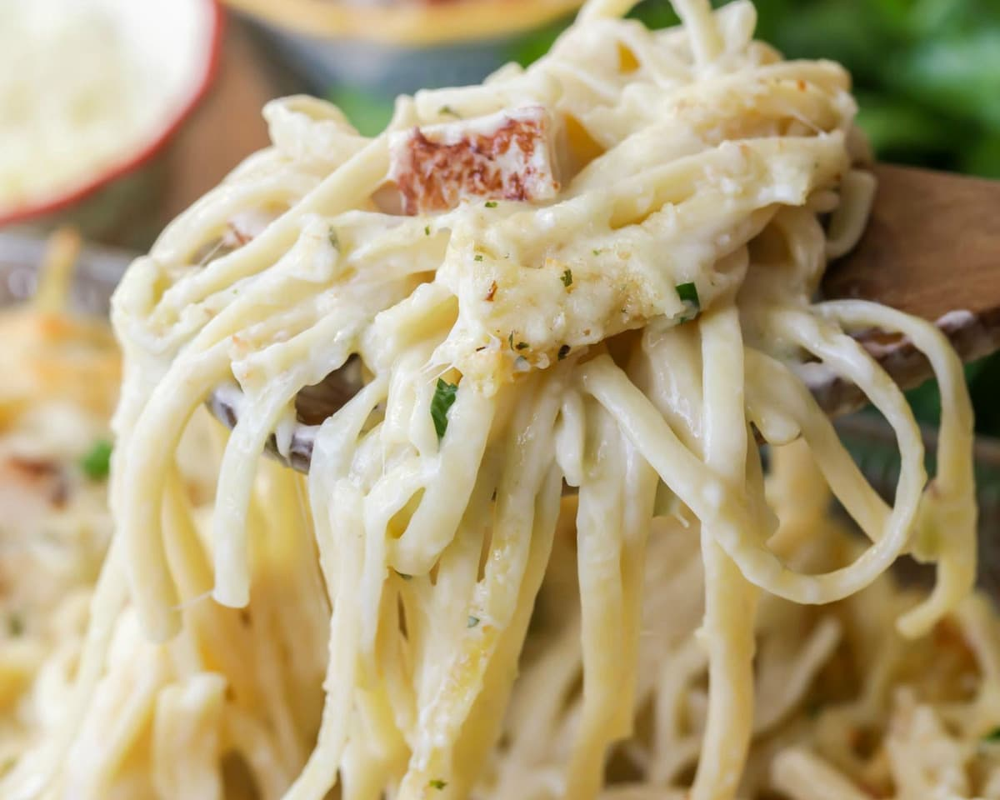

Turkey Tetrazzini

Description
This is an easy recipe for turkey tetrazzini. Cook time may vary depending upon how soupy or thick you prefer the sauce.
Ingredients
- 1 (16 ounce) package uncooked spaghetti
- ½ cup butter
- ½ cup all-purpose flour
- 3 cups chicken broth
- 2 cups milk
- 1 ⅔ cups grated Parmesan cheese
- 4 cups chopped cooked turkey
Steps
- Preheat oven to 350 degrees F (175 degrees C). Lightly grease a baking dish.
- Bring a large pot of lightly salted water to a boil. Add spaghetti, and cook for 8 to 10 minutes or until al dente. Drain, and place in the prepared baking dish.
- Melt butter in a medium saucepan over medium heat. Stir in flour.
- Mix in chicken broth and milk. Cook and stir until the mixture comes to a boil. Stir in about 1 1/3 cups Parmesan cheese, and remove from heat.
- Melt butter in a medium saucepan over medium heat. Stir in flour. Mix in chicken broth and milk. Cook and stir until the mixture comes to a boil.
- Stir in about 1 1/3 cups Parmesan cheese, and remove from heat.
- Mix chicken broth mixture and turkey with spaghetti. Top with remaining cheese. Bake 1 hour in the preheated oven, until surface is lightly browned.